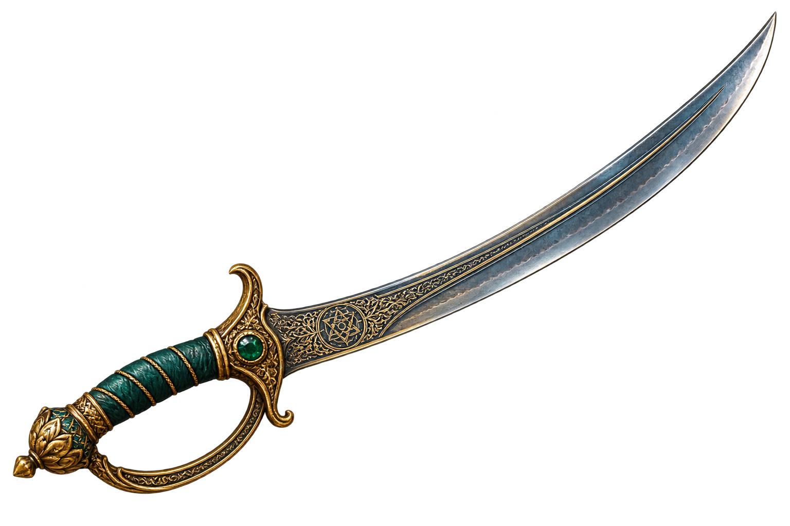

The Sands of Time recall your mortal form.
Rewinding timeline to checkpoint...
A celestial relic radiates warmth from the ruins.
THE SANDS FLOW FORWARD
The echoes of the temple bend to your blade.
The gate to the inner catacombs stands open.
THE TIDE OPENS
The relics whisper across the veil.
CROSSING BETWEEN REALMS